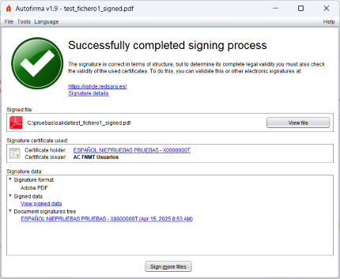
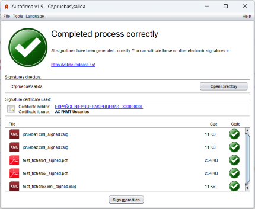
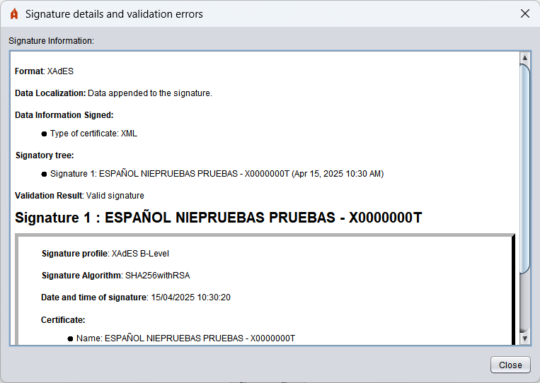

After completion of a signature operation, a screen with information on the outcome of the operation is displayed.
 
If you want more information about the signature, you can click on the Details of the Signature link and a dialogue will be shown with information about it:

This screen is divided into three sections:
Information about the signed file or output directory
The entire path of the signed file (you can copy this path by clicking on it with the right mouse button) or that of the output directory. If the PAdES signature of a PDF document was made, a button will be displayed to open the signed document with the default application in the system.
Information about the certificate used to make signatures
It is possible to see the certificate (by default application of the OS) by clicking on the hyperlinks.
In the case of signing a document, at least the following points are shown by means of a tree structure:
Keyboard cursors can be used to move between the elements of the tree.
In case you have signed multiple files, a list will be displayed with the generated files, their size and result. In the case of signatures that could not be generated, the path of the input file shall be displayed. You can double-click on one of the signatures listed to access your detailed information.